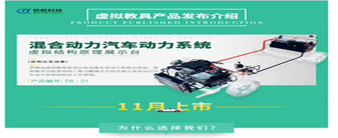

积极开展教学方法的改革，引入现代化学教学理念与手段:
分析化学的学科内容“散”而“杂”，但“目标”相同，在教学中实施以归纳法为特征教学方法，对学生的归纳思维能力进行训练。
从设疑、质疑、启迪出发，引导学生积极思维，开展课堂讨 论，鼓励当堂提问。积极开展创造教学方式，体现在探索中 求知，在讨论中求真，提高学生的创新意识。加强师生交流 与答疑，约定每周答疑时间，给出电话、网上联系方式，激 励学生提问、质疑、参与讨论。
讲授知识点的精华、难点及有助于学生综合素养提高的内容。一 般描述性内容由学生自学，以训练学生获取知识的能力。为此提 供知识面丰富的教材，指点寻找参考材料的途径